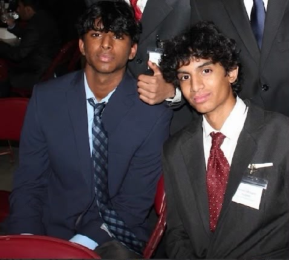

About Our Founder

About Me
My name is Amshul Medisetti, and I am a high school student with a passion for electrical engineering, robotics, and making technology more accessible.
When I was younger, I was fascinated by how electronics worked, but I was not fortunate enough to have full exposure to electrical engineering or the resources needed to explore it. I wanted to learn more, but opportunities to work with real components and build projects were limited.
As I began exploring Arduino, I discovered how exciting it was to turn an idea into something I could actually build. That experience made me realize how many other students might have the same curiosity but never get the opportunity to explore it.
I started this initiative to help change that. Through free Arduino kits and hands-on lessons in circuits, sensors, and robotics, I want to give underserved students the opportunity to experience electrical engineering for themselves.
My hope is that these experiences spark curiosity, build confidence, and inspire students to continue exploring engineering long after our lessons end.